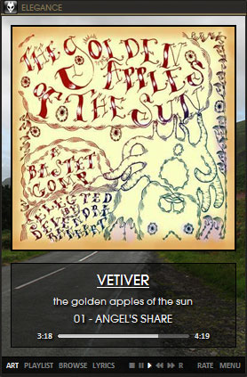
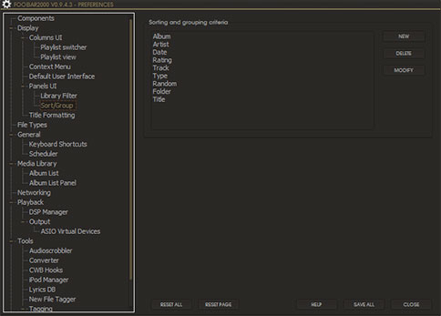

Elegance
by jclim00 (get newest release here)

This is a minimalist panels_ui layout designed to work with any visual style. This is an as-is layout, I won't be taking any feature requests but I'll still try to help people who have problems setting it up. If you want to change something or add or remove panels, you're on your own.
changelog:
- 0.5.0
(06-20-2007)
- removed elfin2-based titlebar and borders, use windows visual style is now default
- repositioned options button to the bottom of the miniplayer "transparent border"
- buttons on the sides of the transparent border to pop up a new full mode view
- full mode view features:
- all panels visible from one view
- all panels collapsible by "transparent border" buttons, popup can be pared down to just the SCPL view
- can be used in tandem with miniplayer or maximized for full screen view
- addition of vis_egoh and peakmeter to full mode
- simpler singles mode view
- unlimited backgrounds can be chosen from the options
- rating color tweaks
- 0.4.0 (06-13-2007)
- added option to use windows visual style
- all panels (with a few exceptions) now transparent
- user customizable background images
- library filter: added header styles and modified "generic" layout
- option to completely hide album/artist art from the now playing panel
- moved options panel toggle to hidden bottom left and bottom right buttons
- removed standard dark/light themes
- 0.3.0 (06-11-2007)
- new options panel
- migrated track order/replaygain controls to options
- added light theme
- 0.2.0
(06-08-2007)
- rating system added
- alternate header style
- colored text in the readme refer to new layout features or updated info.
- 0.1.0
(06-02-2007)
required components:
optional components:
required fonts:
- Calibri - Vista font, if you don't have this, Microsoft provides it with the Microsoft Office Compatibility Pack
- AvantGarde LT Medium, AvantGarde LT Medium Caps - can be found included in this VS (do not use calibri.ttf from this link, it's an early version of calibri that's quite buggy)
- Webdings
installation
Upgrading from a previous Elegance version? Delete your images folder before extracting everything.
- Download the required components and extract them to your foobar\components directory.
i.e. - C:\Program Files\foobar2000\components\
- Copy the fonts to your windows Install\Fonts directory.
i.e. - C:\WINDOWS\Fonts\
- Copy \elegance\ to foobar2000\PanelsUI\ and retain the directory structure
i.e. - C:\Program Files\foobar2000\PanelsUI\elegance\images\
Start up Foobar. Choose Panels UI as layout if prompted. Open up Preferences. Change the following settings:
- Display -> Panels UI -> select layout, elegance\elegance.pui
or elegance\scpl.pui
ELEGANCE.PUI is the miniplayer with an option to popup the full view mode; SCPL.PUI is the full mode without miniplayer
- check tray icon, check the rest as necessary
- select user globals, change the art path to your needs
- $puts(coverPath,$replace(%path%,%filename_ext%,folder.*))
the example searches for folder.* in the same directory as the track.
- $puts(artistPath,$replace(%path%,%filename_ext%,artist.*))
the example searches for artist.* in the same directory as the track.
- if you are updating from a previous panels_ui version, follow these instructions.
- Display -> Panels UI -> Sort/Group

If the window doesn't look similar to this, close foobar and delete foo_ui_panels.dll from your components directory. Then restart foobar, and when prompted do not keep settings for the removed component. Close foobar again and place foo_ui_panels.dll in your components directory.
- Display -> Columns UI -> Main
- Importing and Exporting, import playlistswitcher.fcs
- (if using album list instead of libary filter) Media Library -> Album List Panel -> Advanced
- Use custom colors, RGB values 85,85,85 for the background, 255,255,255 for text, and 0,0,0 for line color.
usage:
- Miniplayer
- Main toolbar controls swap the 4 main panels. Clicking rating/ctrl toggles the stop/pause/play/etc. buttons with the rating controls
- When using the rating controls, if the current panel is the playlist switcher it will change the rating of the highlighted track(s). If not, then it edits the currently playing track.
- The options panel, activated by clicking the bottom edge of the transparent border, controls the playback order, replaygain mode, follow cursor toggle, crossfade toggle, volume, and visual options for the layout. Clicking option will also resize the player back to its normal size if it's been changed.
- When switching backgrounds, restart your foobar after toggling. Transparencies are not updated automatically and a lot of colors from the previous background will bleed through.
- Switching header styles may also not update automatically, scroll the SCPL up and down to refresh it.
- The art panel has 2 mini panels, clicking the artwork swaps album art and artist pictures, clicking the track info swaps the simple now playing display and a detailed display. Clicking the art button in the toolbar when it is activated will hide all artwork from that panel.
- The playlist panel has 2 formats, singles mode and album mode. Right-click the playlist and choose a sorting method to change formats. Clicking the playlist button in the toolbar when playlist is activated toggles the playlist switcher.
- Browse activates the library filter or album list panel depending on the setting in the layout globals.
- keyboard commands to keep in mind: + and - changes the volume, left and right arrows to seek back and forwards.
- Full View
- Main toolbar toggles the art and options panel as well as controls playback functions and rating. Rating will always change the currently selected tracks and not the track currenly playing.
- Options panel functions the same but also changes the visualization mode
- Clicking areas of the transparent border hide the panels relative to it. No popup image shows up to indicate yet, and probably won't unless the buttons function gets a rework to resize the image source.
user backgrounds
You can now use your own backgrounds as well as the default ones that come with this layout. In the Elegance folder is a new backgrounds folder with 4 images labeled image1.* to image4.*. Each image is 274 pixels wide by 401 pixels high. You can add your own images (they can be .gif .jpeg .png), just use image5.*, image6.* etc. If the pictures are not the dimensions specified it will look stretched or misaligned. It's best to use pictures that do not have sharp constant contrast changes as they might not be very readable with text overlayed on top.
To use backgrounds in the full view player, name them popup3.* etc. The layout has a default maximum background size of 1900x1200. If you want to use images larger than that you have to change the code in the full view config.
Right click on the transparent border and look for this line at the top: $imageabs2(1900,1200,,,0,0,0,0,backgrounds\popup$eval($getpvar(popup_theme) + 1).*,VALIGN-T HALIGN-L)
Replace 1900,1200 with your maximum image size.
troubleshooting:
- Library Filter not showing up? Make sure you have the panels_ui version indicated above in the readme.
- Are all discs showing up under Disc 1 under grouping? Change this field:
- Panels UI -> Sort/Group
- Highlight Album and modify; replace the primary sort with
$ifequal($get(isSingle),1,! Single,%discnumber% $upper(%album%))
- Do you use the %album artist% tag for Various Artists, and you have VA entries that have only 1 or 2 entries in the library filter? Change this field:
- Panels UI -> Library filter
- highlight the second entry in the box and change %artist% to %album artist%
- Do you want to sort the albums by date in the library filter?
Change this field:
- Panels UI -> Library filter
- highlight the third entry in the box and change $album% to %date% - %album%
why isn't there...
- A volume slider?
The colors of the volume slider are determined by the visual style windows is using. If the volume slider lines are dark, and it's overlayed on the toolbar which is also dark, it isn't very visible.
- A functional seekbar?
Same reason as above. There is the alternative of the wsh_panel but I've found that this is extremely buggy and causes crashes when overlayed on top of an existing track info panel.
- A quicksearch toolbar?
I don't use it. Plus, you can't change the font, thus it takes up a lot of space.
- A playlist dropdown?
It's ugly and not very functional.
what happened to gsm_flavored?
After a hard drive crash wiped the code I wrote updating my old gsm_flv layouts to work with the new panels_ui versions, I ended up abandoning them and using some parts in this one (notably the now playing display and album mode SCP layouts. no need to change something that isn't broken!)